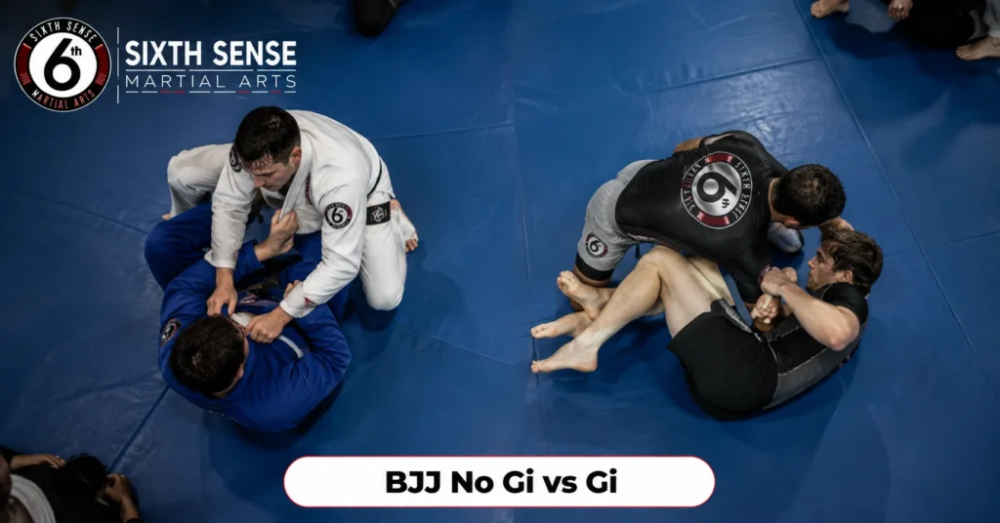
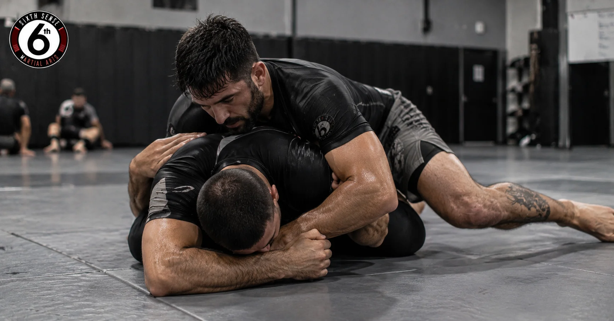
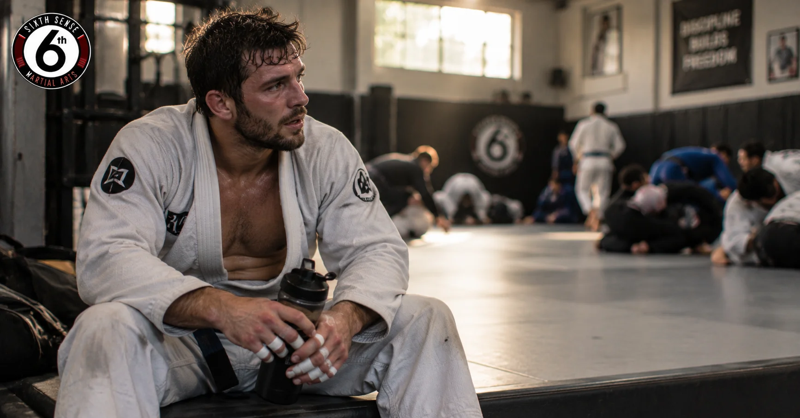

BJJ No Gi vs Gi Which Style Is Right for You

BJJ No Gi vs Gi The Question Every New Student Asks
Walk into any Brazilian Jiu Jitsu gym for the first time and you will likely hear this exact debate within your first week. BJJ no gi vs gi is one of the most common questions new students bring to Sixth Sense Martial Arts in Coppell TX and honestly it is a great question to ask. Both styles fall under the same sport but they feel completely different once you step on the mat. Understanding the distinction early on will save you confusion and help you train with more purpose from day one. So in this guide I will break down exactly what separates these two formats and help you figure out which one fits your goals best.
What Gi BJJ Actually Involves
Gi BJJ is the traditional form of the sport and it is probably what comes to mind when you picture Brazilian Jiu Jitsu. Students wear a thick cotton kimono that includes a jacket pants and a colored belt indicating rank. This heavy fabric becomes an actual tool during training because every collar sleeve and pant leg can be gripped pulled and used to control your opponent. As a result gi training creates a slower and more methodical pace where technique and patience matter more than speed. Moreover the friction created by the fabric makes it harder to slip out of holds which forces students to develop precise positional control. Because of this many instructors consider gi training the foundation that builds a stronger technical base.
What No Gi BJJ Actually Involves
No gi BJJ strips away the traditional uniform entirely. Instead students wear a fitted rash guard and shorts or spats which means there is no fabric to grab onto. As a result the entire game shifts because you now have to control your opponent using their body directly through wrist grips underhooks overhooks and head position. Furthermore without the friction that fabric provides the pace becomes noticeably faster and far more dynamic.In addition no gi training closely mirrors the submission grappling you would see in MMA which is why fighters who compete in mixed martial arts often prioritize this format. Consequently no gi BJJ rewards athleticism speed and constant motion over the slower positional grinding found in the gi.

The Real Difference in Pace and Intensity
One of the biggest distinctions in the BJJ no gi vs gi debate comes down to speed. Gi training tends to move at a slower and more calculated tempo because grips on the fabric allow you to control position and even pause momentarily to think through your next move. However no gi training removes that safety net entirely which means you have to stay in constant motion. As a result rolls in no gi often look more like scrambling wrestling matches with rapid position changes. Moreover this faster pace in no gi demands more cardiovascular conditioning and explosive movement. On the other hand the slower pace in gi rewards patience and allows beginners more time to process and execute techniques correctly.
How Techniques Differ Between Gi and No Gi
The BJJ no gi vs gi comparison also comes down to which techniques are even available to you. In gi training you gain access to a wider variety of techniques including collar chokes lapel guards and grip based sweeps that simply do not exist without fabric. Furthermore these fabric dependent techniques require significant technical precision which is why many instructors say gi builds a more complex overall game. On the other hand no gi opens up techniques like heel hooks and leg entanglements that are often restricted or banned in gi competition due to injury risk from the added friction. Consequently practitioners who train both formats develop a more complete and versatile skill set than those who stick to just one style.
Which Style Builds Better Self Defense Skills
A common question in the BJJ no gi vs gi debate is which format translates better to a real world self defense situation. The honest answer is that both offer real value but in different ways. Gi techniques teach you how to use clothing against an attacker including grabbing sleeves to block strikes or using a collar for control which is highly relevant since most people wear jackets hoodies or shirts in everyday life. However no gi training builds body control underhooks and wrestling based skills that apply directly to grappling without any clothing involved at all. As a result many instructors recommend training both formats to build a well rounded skill set that prepares you for a variety of real world scenarios.
Which Style Is Better for Complete Beginners
If you are brand new to Brazilian Jiu Jitsu deciding where to start in the BJJ no gi vs gi debate can feel overwhelming. Gi training is often recommended first because the slower pace gives beginners more time to understand positioning before speed becomes a factor. Moreover the grip fighting involved in gi builds patience and precision which creates a strong technical foundation. However some beginners find no gi more intuitive because it feels closer to natural wrestling and does not require learning how to manipulate a uniform. Consequently neither choice is wrong and many gyms including Sixth Sense recommend trying both during your first few months to see which style resonates with you personally before committing to one path.
The Belt System and How It Applies to Each Format
One important detail in the BJJ no gi vs gi conversation involves the belt ranking system. Traditional colored belts are only worn during gi training and they serve as a visible marker of your technical skill and progress. As a result many students find gi training more motivating early on because they can see tangible proof of their advancement. However no gi training does not use this same visible ranking system even though your skill level absolutely still progresses through consistent practice. Furthermore some competitions and gyms track no gi progress informally through experience level rather than an official belt. Because of this students who care about a structured progression system often lean toward prioritizing gi training even while incorporating no gi sessions.
Competition Rules You Need to Know
If you plan to compete the BJJ no gi vs gi distinction becomes even more important because the rulesets are completely different. In gi competitions particularly under IBJJF rules certain leg attacks and techniques are restricted or banned entirely which creates a more conservative style of competition. However no gi competitions including formats like ADCC allow a wider range of submissions which creates a faster and more aggressive style of matches. As a result a technique that is completely legal in one format could get you disqualified in the other. Moreover if you are preparing for a specific tournament it is critical to train under that exact ruleset beforehand. Consequently competitors often adjust their entire game plan depending on whether they are stepping onto the mat for a gi or no gi event.
Physical Benefits Unique to Each Style
Beyond technique the BJJ no gi vs gi choice also affects the physical benefits you receive from training. Gi training tends to build grip strength patience and problem solving because you constantly have to fight for and maintain control through fabric grips. On the other hand no gi training develops faster reactions better balance and more explosive recovery because the pace demands quick adjustments at all times. Furthermore the increased pace of no gi often results in a higher intensity cardiovascular workout compared to the slower grinding nature of gi. In addition both formats build full body strength and functional fitness which means neither style leaves you at a physical disadvantage regardless of which one you prioritize.

Can You Train Both Gi and No Gi at the Same Time
Many students wonder if they need to choose one side of the BJJ no gi vs gi debate permanently or if they can train both simultaneously. The good news is that most serious practitioners actually train both formats regularly because each one reinforces the other. Techniques learned in gi are often revisited in no gi with slight modifications which helps you understand not just how a technique works but why it works and what it depends on. Moreover at Sixth Sense students have access to both formats which allows them to build a deeper and more adaptable overall game. As a result training both styles from early on tends to accelerate your development far more than sticking exclusively to just one format.
What to Expect in Your First Class of Either Style
Whether you choose to start with gi or no gi your first class at Sixth Sense will follow a similar structure. You will begin with a dynamic warm up followed by technique instruction where the coach breaks down a specific move step by step. Subsequently you will practice that technique with a partner while receiving personal feedback along the way. After that most classes move into live rolling where you apply what you just learned against a resisting partner. The pace and intensity will feel different depending on which format you choose but the teaching structure remains consistent. No prior experience is required and the coaches will guide you through everything you need to know for your very first session.
Making Your Final Decision Between Gi and No Gi
At the end of the day the BJJ no gi vs gi decision comes down to your personal goals and preferences. If you enjoy a slower more technical pace and want the structure of a visible belt ranking system gi training might resonate with you more. However if you prefer a faster more dynamic style that closely mirrors MMA grappling no gi could be the better fit. Neither option is objectively harder or more valuable than the other. The most important thing is picking a starting point showing up consistently and staying open to eventually training both. At Sixth Sense the coaching staff can help guide you toward the format that best matches your goals whether that is competition self defense or simply enjoying the process of learning.
Conclusion
The BJJ no gi vs gi debate does not have a single correct answer because both formats offer genuine value in different ways. Gi training builds patience precision and a strong technical foundation while no gi develops speed athleticism and skills that transfer directly to real world grappling situations. At Sixth Sense Martial Arts in Coppell TX students have the opportunity to explore both formats and discover which one fits their personal style and goals. Whether you are drawn to the traditional structure of gi or the fast paced intensity of no gi the most important step is simply getting on the mat and starting your journey. Book your free trial class today and experience the difference for yourself.
Contact Us
Have questions about our classes or training programs. We would love to hear from you. Reach out to us today and let us help you start your martial arts journey the right way.
Follow Us on Social Media
Stay connected with the Sixth Sense Martial Arts community. Follow us for training tips belt grading updates student highlights and exclusive offers.
FAQ’s
Neither format is objectively harder they simply challenge you in different ways. Gi demands more technical precision because grips slow the pace down while no gi requires faster reactions and constant movement without any fabric to rely on.
No a gi is only required if you plan to train the gi format. For no gi classes you just need a rash guard and shorts or spats which are much more affordable than a traditional kimono.
Both formats offer real self defense value in different scenarios. Gi techniques apply well when an attacker is wearing clothing while no gi builds body control and wrestling skills for situations without any grips available.
Yes there is no rule requiring beginners to start with gi. Some students find no gi more intuitive since it feels closer to natural wrestling. Trying both early on helps you discover which style suits you best.
The traditional colored belt system has historically only been worn during gi training as a visible marker of skill and rank. However your no gi skill level still progresses just as much through consistent training and experience.
Most experienced practitioners recommend training both because each format reinforces the other. Techniques learned in gi often get revisited in no gi which builds a deeper and more complete overall game over time.
Train with us in Coppell
The first class is free. Shorts, a t-shirt and a water bottle. We lend the rest.
Book a free class